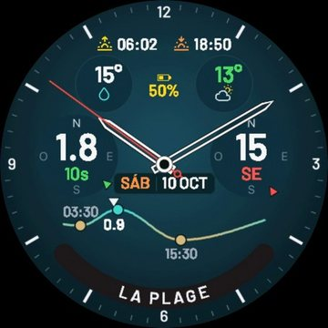
Esfera
Surf Dawn
El mar de tu pico de un vistazo, todo el día en la muñeca: olas, viento y marea, el agua y el aire, el sol y la batería.
Ver en Connect IQ
Las mejores horas para surfear, en tu reloj y tu iPhone.
El pronóstico de tu pico hora por hora, con las mejores horas ya calculadas, y después cada ola de tu sesión. Gratis, sin publicidad y sin cuentas.
Cada reloj anda solo. Con la app de iPhone, todo se junta: tus sesiones, tus tablas y tus números.
La esfera, Pronóstico, Sesión y los campos de datos
La semana de tus picos y todas tus sesiones, de cualquier reloj
Pronóstico, Sesión y Entrenar en una sola app
Cinco apps gratis en la tienda Connect IQ, y Sesión muy pronto. Instalá las que quieras: cada una anda sola, y juntas se completan.

El mar de tu pico de un vistazo, todo el día en la muñeca: olas, viento y marea, el agua y el aire, el sol y la batería.
Ver en Connect IQ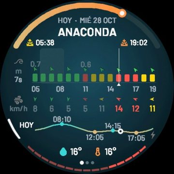
Tu día hora por hora con las mejores horas marcadas, Hoy con los picos cerca ordenados de mejor a peor, y un aviso a la mañana con el mejor pico del día.
Ver en Connect IQ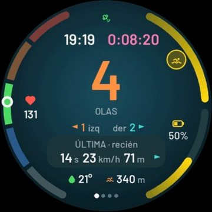
Graba tu sesión, cuenta tus olas y te lleva de vuelta al pico. Al salir, el resumen con tus olas, y todo queda en Garmin Connect.
Muy pronto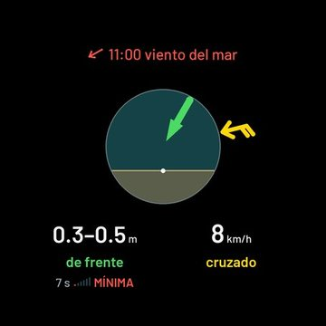
Las olas y el viento de ahora dentro de tu actividad, con la rosa del pico. En el Surf de Garmin, también cuenta tus olas.
Ver en Connect IQ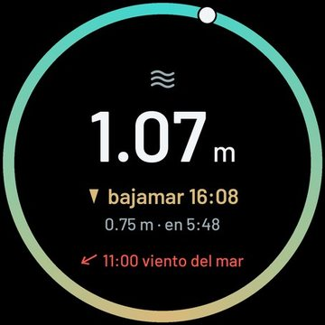
La marea dentro de tu actividad de surf, SUP o natación: la altura de ahora y cuánto falta para la próxima pleamar o bajamar.
Ver en Connect IQ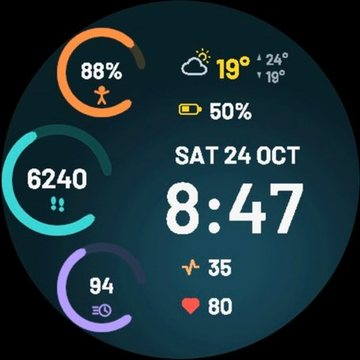
Para los días sin olas: Body Battery, pasos y minutos de intensidad en tres anillos, con el clima, el estrés y el pulso.
Ver en Connect IQLa esfera, Pronóstico y Sesión andan en 50 Garmin redondos de 5 botones (fēnix, epix, Forerunner y otros). Anillos y los campos de datos, en casi 100 relojes.
Una sola app: la de iPhone trae adentro la del Apple Watch.
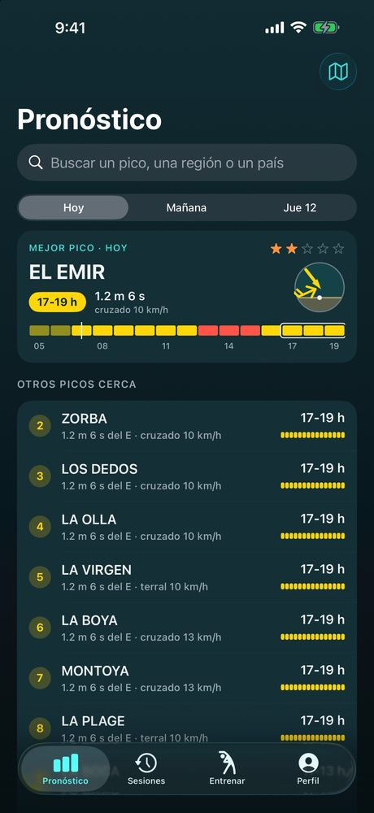
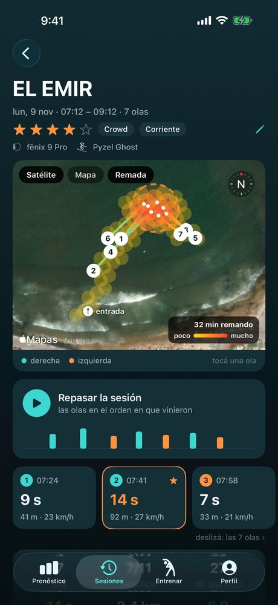
La semana de cada pico, con el mapa para buscar otros. Tus sesiones con sus olas sobre el satélite y las fotos de ese día, tus números y cuándo surfeás mejor. Entrenar: rutinas antes y después del agua, y apnea. Recibe las sesiones del Apple Watch y de Sesión en un Garmin.
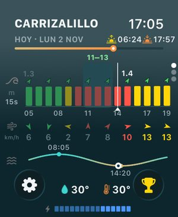
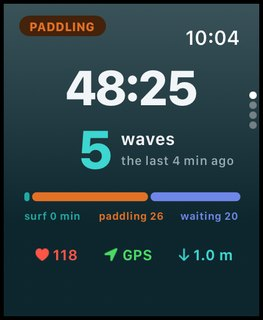
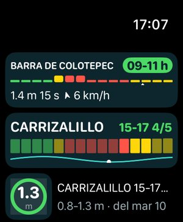
Pronóstico, Hoy y el aviso de la mañana, con complicaciones y el Smart Stack. Sesión cuenta tus olas y la guarda en Salud. Y Entrenar, en la muñeca.
iPhone con iOS 17 o más; Apple Watch con watchOS 10 o más.
Surf Dawn es gratis y sin publicidad. Si te sirve para agarrar mejores olas, dejá una reseña en la tienda y pasáselo a quien surfea con vos. Pronto, desde la app de iPhone, vas a poder invitarle un café al que la hace.
¿Algo anda mal o falta un pico? Soporte